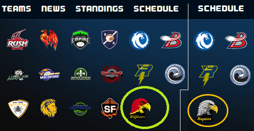
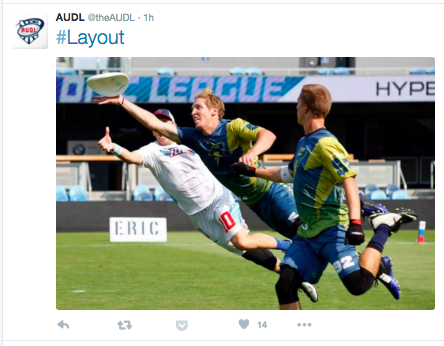
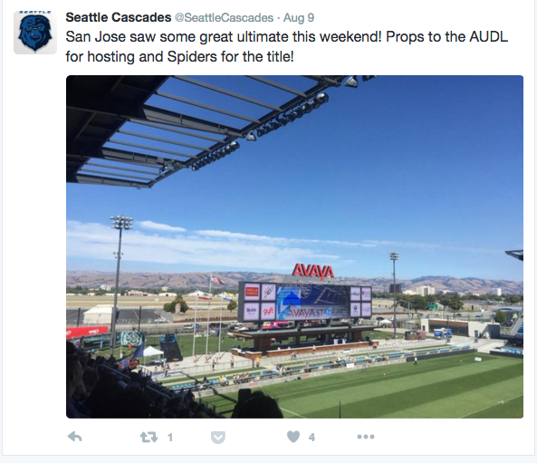
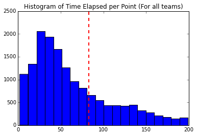
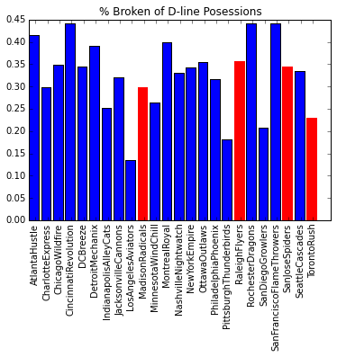
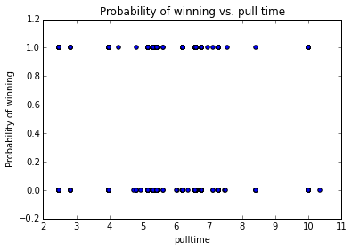
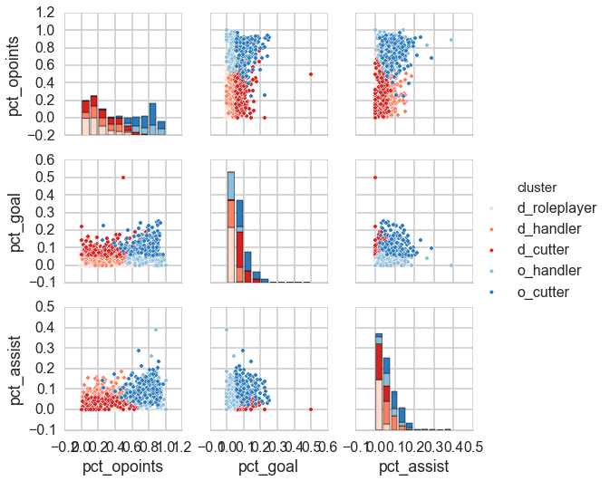

Ultimate Frisbee is one of the fastest growing sports today, with an estimated 70 million men and women current players in more than 80 countries (USA Ultimate). The world of sports analytics is currently wildly popular among football, basketball, baseball, and etc.. However, to our knowledge, this data is not currently analyzed in the Ultimate world. As Ultimate players and data scientists, we wanted to explore this data and find out if there were characteristics that made someone a handler, a cutter, or what made a good player, play, or team, with many factors.
The American Ultimate Disc League (AUDL) is a professional ultimate frisbee league in North America. The data we worked with came from the 2015 AUDL Championships - http://theaudl.com/stats/allstandings. We also worked with Twitter data to see player, team, or league mentions.
25 Professional Teams
140,000 Play-by-play Statistics

~2,000 AUDL Tweets
1,000 Player/Team Tweets


Analysis
Exploratory Analysis



In our exploratory analysis, we aimed to answer a few questions:
Does the length of time of a point tell us anything about the performance of a team?
Does the percentage of points broken when on offense or defense tell us anything about a team?
What do statistics like, goals, assists, or throwaways, tell us about a player?
In our exploratory analysis, we sought to segment the data by team to see how they compared against each other.
We first looked at length of time per point for each team. The overall average is around 83 seconds, with Detroit Machanix with the lowest point elapsed points, and New York Empire with the highest.
We also thought it would be interesting to look at Percentage Broken of Offensive line Possessions vs. Percentage Broken of Defensive Line Posessions. We typically expect a lower percentage of broken on the O-line because it is easier to score a goal on Offense. Interestingly, the San Jose Spiders, the 2015 AUDL winner was broken on about 25% of their O line posessions - we would have expected much lower. Even the regional winners seemed to have variable percent broken on O-line possessions. On the other hand, the regional winners seem to have a pretty good D-line % broken though.
By running a logistic regression, we found that Pull time does not correlate with Probability of winning the point. In fact, any pull time correlates to about a 30% chance of winning the point.
Player Clustering

We wondered if it would be possible to cluster players into offensive or defensive handler/cutter positions with a k-means algorithm. Investigating our clusters above we can see a few things. One of the first is that our suspicion about offensive/defensive players: we can see that the histogram for percentage of offensive points played is bimodal, with players tending to play their points on one particular side of the disc. We can also see the large group of defensive role players in the bottom corner of the plot. While it is unfortunate for classification that we cannot really tell if these players are handlers of cutters, it is necessary to do a 5-cluster model so that we have some method of identifying defensive handlers.
Point Clustering
Like many sports, there is an emphasis on highlight plays during games. It can be difficult to determine when those plays might happen within a game. We performed some analysis on points based on the number of turns, d's, length of point, and number of throws. This analysis led to a 3-cluster model, where we can tell when points are very clean and quick, and when they are incredibly long, and have lots of turns. The middle cluster is one that might be the most interesting to examine for highlight plays. Our analysis indicates there are on average .5 d's per clean point, and therefore it is possible that these points are examples of high level, or very intense ultimate. For coaches or players trying to see good examples of the game played well, these points would be good to watch.
Our initial analysis with just examining turns and d's (the most commonly talked about stat in ultimate) were not very illuminating. Adding the extra feature of time and throws per point allowed for more differentiation between points.
The purpose of this part of the project is to find out what the characteristics are to look for in a player that is exceptional. For a person who is new to ultimate, it can be hard to know who to watch and why. In order to determine what players are actually popular, we first turned to twitter to extract player mentions. The Ultimate Frisbee community is very active on twitter, so this is generally a good forum to look at for news, since the sport is not usually televised. We then used Support Vector Machines and Decision Trees/Random Forests to make models for determining the factors that play into a player's twitter popularity.
Takeaways
Given the relatively low accuracy score of our classifiers, the predictive value of our variables remains somewhat unclear - although our analysis was able to identify important clusters in terms of player type and hightlight plays, more information may be needed to implement a more accurate algorithm. Future work could look to include data from past years to compare data over time.


{kind=link}